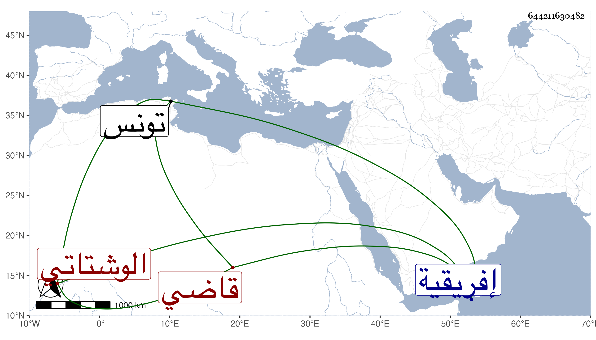

0902Sakhawi.DawLamic.ITO20230111-ara1.EIS1600.644211630482
Biography ID: 644211630482
465
أبو القسم الوشتاتي نسبة لقبيلة من عمل افريقية القسنطيني وهو محمد بن محمد بن أحمد قاضي الجماعة بتونس ممن أخذ عن موسى الغبريني وغيره وولي قضاء الجماعة وإمامة جامع الزيتونة وكان لا يخاف في الله لومة لائم وقام في أيام قضائه على أحمد بن عمر القلشاني ورام قتله فلم يتمكن لكنه عزر بالحبس وغيره واتفق أنه مات مقتولا يقال من جهة حكمه في بعض الأحافصة فدس عليه من قريب للمحكوم عليه فقتله وهو بمحراب جامع الزيتونة في صلاة الصبح يوم الخميس تاسع عشر صفر سنة ست وأربعين . أرخه ابن عزم وقيل يوم الجمعة في الصلاة فبادر من كان يصلي لقتله بعد أن جرح جماعة منهم ولكنهم ألقوا عليهم برنسا وقال الشيخ إني أبرأ إليك مما فعلوه وعلل ذلك بأنه لم يمت إلى الآن فكيف يقتل القاتل ولم يلبث أن مات وكان عمر القلجاني يقول أنه رام قتل أخي بالسكين فقتله الله بها ولكن الحال مفترق في الموضعين فذاك بسيف الشرع وهنا أكرم بالشهادة وكان ذا وقع عند الخاصة والعامة ومحمد ابنه الأصغر الآن بعيد التسعين قاضي الجماعة وليها بعد محمد الرصاع وهو طيب الخاطر بذلك كراهة في القلجانيين واقتصر له على إمامة جامع الزيتونة
